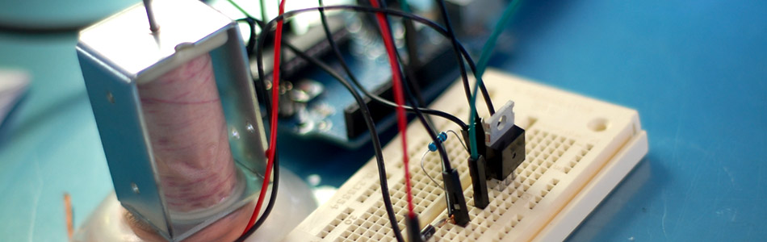

High-Power Control: Arduino + N-Channel MOSFET

Eventually you are going to find yourself holding a 12v solenoid, motor, or light and wondering "How the heck am I supposed to control this from my Arduino?" And we have covered this in the past. Today we are going to talk about another way of doing just that, this time with an N-Channel MOSFET metal–oxide–semiconductor field-effect transistor, specifically the RFP30N06LE MOSFET (You can pick these up from sparkfun). but you can use any N-Channel MOSFET exactly the same way.
How this works
WARNING: I am about to simplify the crud out of this, so beware... it is here in an attempt to explain, in simple terms, what is going on.
First off, a MOSFET is a transistor, just a special kind.
If you don't know transistors at all, they are 3 lead components that have 2 simple functions, to switch or amplify (in this example it is setup as a switch). You basically have an In called the Source, an Out called the Drain, and a Control called the Gate. When you send a HIGH signal to the gate (control pin), the transistor switches and allows current to flow from the source (in) to the drain (out).
So we connect it so that our motor, solenoid or light is connected to V+ but not ground (V-). Ground is connected to the transistor's drain. When our arduino sends a HIGH signal to the transistor's gate, it switches the transistor (connecting the drain and source) and completes the circuit for the motor, solenoid, or light.
More Information
If you want to know more, or actually know what is actually going on in there. Pete over at Sparkfun put out amazing video explaining MOSFETs for a solid 20min. Highly recommended.


{kind=link}
Hooking it up / What's the diode used for?
This circuit is pretty simple. The only part that looks funny is the resistor. This is a pull-down resistor. The resistor holds the gate low when the arduino does not send a high signal. This is here incase the arduino comes loose, or the wiring is bad it will default to off. You don't want this pin to ever be floating as it will trigger on and off.
You can see that in 2 of the 3 illustrations, there is a diode parallel to the device we are powering. Any time you are powering a device with a coil, such as a relay, solenoid, or motor, you need this guy, and don't leave home without it. What happens is when you stop powering the coil, a reverse voltage, up to several hundred volts, spikes back. This only lasts a few microseconds, but it is enough to kill our MOSFET. So this diode (only allows current to pass one way) is normally facing the wrong direction and does nothing. But when that voltage spikes comes flowing the opposite direction, the diode allows it to flow back to the coil and not the transistor. We will need a diode fast enough to react to the kickback, and strong enough to take the load. A rectifier diode like the 1N4001 or SB560 should do the job. If you are looking for extra protection you could use an optoisolator between the Arduino and the transistor. An optoisolator optically isolates both sides (high and low power) of the circuit so the high-voltage can not possibly come back to the microcontroller.
Just make sure that protection diode is facing the correct way (stripe facing the V+ of device). If it is facing the wrong direction, the device you are trying to power will not work as the diode will just allow the current to bypass it.
Limitations
Transistors like the RFP30N06LE are really great for controlling high-power devices from your arduino, but they do have some limitations. This current configuration is only useful for switching DC current, so don't try this with an AC source, also MOSFETS have both a voltage and an amperage/current limitation. The RFP30N06LE can handle switching up to 60V, and the amperage is limited to 30A (with heat sink and proper wiring). Anything over a few amps, especially when the current is constant (like in a motor) and not short pulses, I would recommend using a heat-sink. I usually just solder a bent pice of metal to the back, just something to help dissipate the heat. Just note, if you are using more than one of the RFP30N06LEs, you can not solder them to the same heat-sink as the back is connected to the drain of the MOSFET, not the source. If you need to switch AC, I would look at using a relay instead.
Fade it!
You know the PWM outputs on your Arduino? Yeah, the thing that allows you to analogWrite(pin, value). Well, PWM is not actually an analog output. The Arduino is actually pulsing (very quickly) between 0 and 5v so that the average voltage is somewhere in between 0 and 5. Because of this, the PWM can be extended through the transistor (the transistor can only turn on or off, but can do so very quickly) allowing us to fade lights or control the speed of a motor just like if they were connected directly to the Arduino. All you need to do in order to take advantage of this is make sure the MOSFET's gate is connected to a PWM pin.
Code
You don't really need code for this, you just send a HIGH signal to the gate pin, and BAM... it works. But I threw this together for you so you can test it fading with the PWM- This code fades in a sin wave like the video below. (only useful for a motor or light obviously).
////////////////////////////////////////////////////////////////// //©2011 bildr //Released under the MIT License - Please reuse change and share //Simple code to output a PWM sine wave signal on pin 9 ////////////////////////////////////////////////////////////////// #define fadePin 3 void setup(){ pinMode(fadePin, OUTPUT); } void loop(){ for(int i = 0; i<360; i++){ //convert 0-360 angle to radian (needed for sin function) float rad = DEG_TO_RAD * i; //calculate sin of angle as number between 0 and 255 int sinOut = constrain((sin(rad) * 128) + 128, 0, 255); analogWrite(fadePin, sinOut); delay(15); } }
Video
This video is showing the capabilities of PWM with the RFP30N06LE. The light, though it looks like a standard house light, is actually a 15W 12V DC light.
Article taken from bildr.org with minor changes - I am the original author of this content